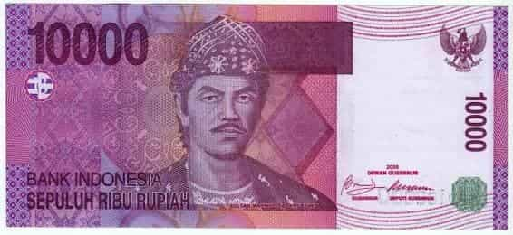

WELCOME
Anda akan berperan sebagai kasir manual yang melayani para pembeli.
Pembeli akan membeli sejumlah barang dan membayar dengan sejumlah uang.
Anda diminta untuk memberikan kembalian yang sesuai.
Anda harus cepat dan tepat dalam memberikan kembalian, karena masih banyak pelanggan yang mengantri di belakang.
Anda diberikan nyawa / kesempatan, yang mana apabila waktu habis atau salah memberikan kembalian, maka nyawa / kesempatan akan berkurang
Permainan dinyatakan selesai apabila nyawa / kesempatan anda habis, atau anda sukses melayani semua pelanggan.
Contoh soal :
Andi membeli beberapa barang dengan total Rp. 10.000
Andi membayar dengan uang Rp. 50.000
Jawaban Kembalian : Rp. 40.000 ==> (tekan gambar sepuluh ribu () empat kali)
*Untuk menjawab, anda dapat menekan gambar uang, atau juga ketik
manual dibawah gambar uang
*Anda mungkin akan membutuhkan kalkulator untuk menghitung kembalian.